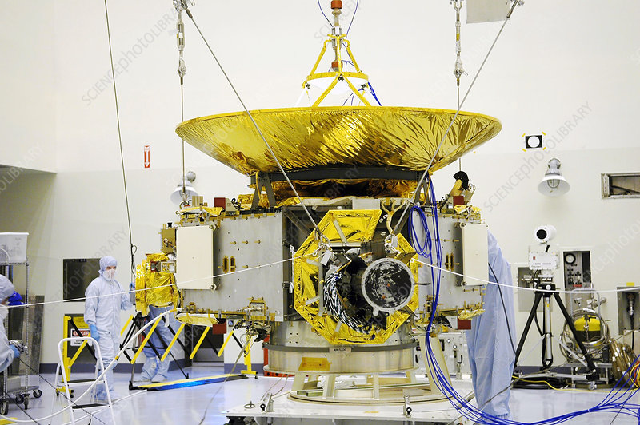
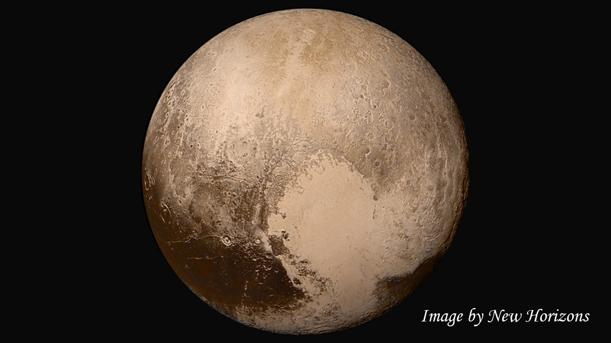

New Horizons is an interplanetary space probe that was launched as a part of NASA's New Frontiers program. Engineered by the Johns Hopkins University Applied Physics Laboratory (APL) and the Southwest Research Institute (SwRI), with a team led by S. Alan Stern,[5] the spacecraft was launched in 2006 with the primary mission to perform a flyby study of the Pluto system in 2015, and a secondary mission to fly by and study one or more other Kuiper belt objects (KBOs) in the decade to follow, which became a mission to 486958 Arrokoth. It is the fifth space probe to achieve the escape velocity needed to leave the Solar System.
 